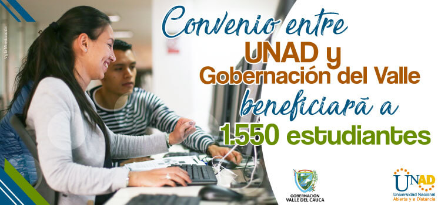
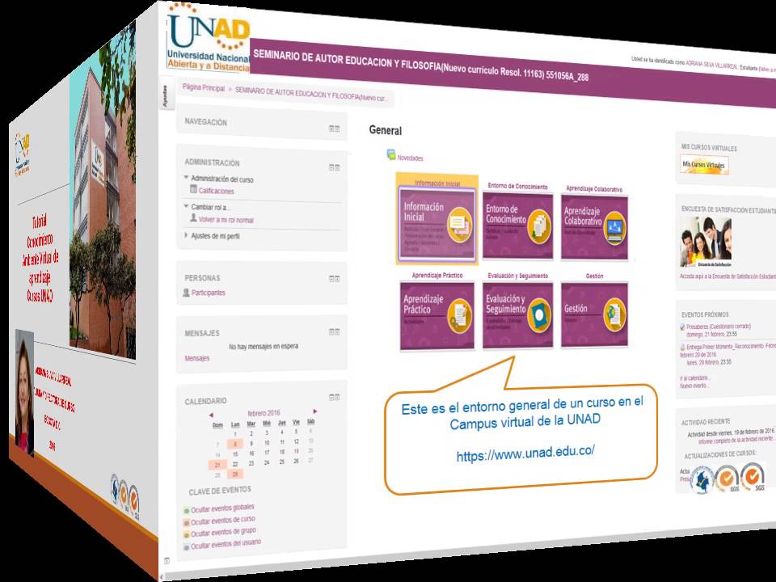

|  |
Metodología de estudio
La universidad ofrece sus diferentes programas a través de la formación a distancia. Esta metodología emplea medios y mediaciones tecnológicas paraque el estudiante pueda adelantar sus estudios a cualquier edad, en cualquier momento y desde el sitio en donde se encuentre.
De igual manera, la formación a distancia le permite al estudiante avanzar en su proceso educativo y desempeñar al mismo tiempo una actividad laboral o cualquier otra ocupación; o dedicarse exclusivamente al estudio, si las condiciones se lo permiten.
|
|  |
Campus Virtual
Para esta modalidad, el acceso a los contenidos didácticos, los procesos de aprendizaje en línea y el acompañamiento tutorial se realizan en el Campus Virtual. Muchos estudiantes en Colombia y en el exterior se forman a través de él. Entre los servicios que ofrece se encuentran:
Contenidos didácticos con estándares internacionales que opcionalmente pueden descargarse en formato html y pdf para su tratamiento offline o sin conexión a Internet.
Actividades interactivas con acompañamiento tutorial.
Acceso a la biblioteca virtual.
Herramientas en línea para el aprendizaje colaborativo: foros, chat, wiki, debates, grupos de discusión y noticias.
Evaluaciones y exámenes finales en línea o a través de la plataforma tecnológica. También, reporte automatizado de notas y calificaciones.
Registro sistematizado de las actividades realizadas y consulta en línea de los resultados de los procesos de aprendizaje.
Trámites administrativos.
Servicios de bienestar universitario.
Consejería académica en línea.
Soporte técnico permanente a través de la plataforma o telefónico si se requiere.
|
 |
Sistema de créditos académicos
Este sistema se centra en el trabajo académico que realiza el estudiante a partir de sus propios procesos de aprendizaje. Un crédito tiene 48 horas de trabajo académico e incluye el estudio independiente, el trabajo colaborativo y las horas de acompañamiento tutorial.
Los programas, al igual que los cursos, se conforman por créditos académicos y la matrícula se realiza mediante este sistema.
Estudiantes que ingresan al primer periodo de un programa académico de pregrado deberán inscribir entre 14 y 18 créditos y quienes lo hagan a partir del segundo, entre 10 y 18. De esta manera, el valor de la matrícula dependerá del número de créditos inscritos.
Para todos los programas de posgrado podrán inscribirse entre 6 y 12 créditos académicos.
En los periodos tanto de 16 como de 8 semanas los alumnos pueden adelantar estudios e inscribir determinado número de créditos que, de igual manera, se reflejarán en el valor de la matrícula.
En la inscripción de créditos se debe tener en cuenta la disponibilidad de tiempo, recursos financieros y el rendimiento académico.
|